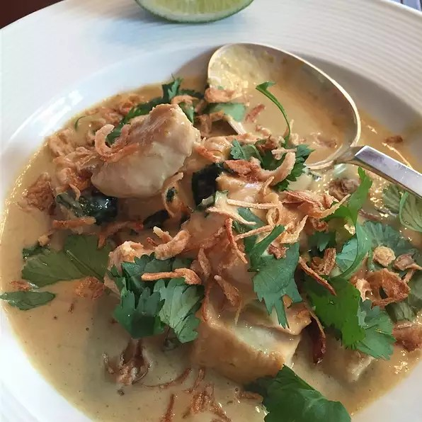

Chicken in a Green Curry sauce, topped with sprigs of Cilantro.
Description
Your kitchen will come alive with the fragrance and delicate balance of sweet and spicy flavors! The tender chicken bathed in a flavorful, creamy Green Curry sauce is best served over Jasmine rice. Best of all, this recipe, that the whole family will love, only takes 1 hour of your time!
Ingredients
1 pound skinless, boneless chicken breast halves cut into 1 inch cubes
2 tablespoons soy sauce
1 tablespoon all purpose flour
2 tablespoons cooking oil
2 tablespoons green curry paste
2 green onions chopped
3 cloves garlic, peeled and chopped
2 teaspoon fresh ginger, peeled and finely chopped
2 cups coconut milk
1 tablespoon fish sauce
2 tablespoons white sugar
1/2 cup cilantro leaves
Steps
Toss the chicken with 1 tablespoon soy sauce.
Add the flour and coat the chicken pieces evenly.
Heat the oil in a large skillet over medium high heat.
Cook the chicken aobut 5 minutes or until brown.
Remove the chicken from the skillet.
Reduce the heat to medium and stir in the curry paste.
Cook for 1 minute until fragrant.
Add the green onions, garlic, and ginger.
Cook another 2 minutes.
Return the chicken to the skillet.
Stir and coat the chicken evenly with the curry mixture.
Add the coconut milk, fish sauce, 1 tablespoon soy sauce, and sugar.
Stir to combine.
Simmer over medium heat for 20 minutes until the chicken is tender.
Service over Jasmine rice and garnished with Cilantro.